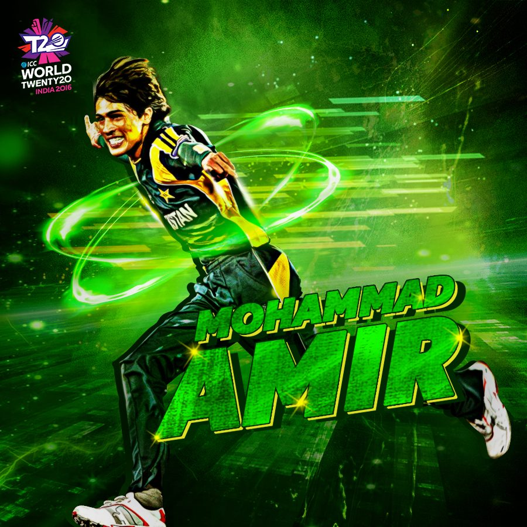

The 2016 Pakistan Super League or HBL PSL 2016 was the debut season of the Pakistan Super League which was established by the Pakistan Cricket Board. The tournament featured five teams and was held from 4 February 2016 to 23 February 2016 in the United Arab Emirates. The opening ceremony and first match of the tournament were held at the Dubai International Cricket Stadium on 4 February 2016
Islamabad United "United we Win"

Karachi Kings "King of Kings 'Dilon k Badshah"
Lahore Qalanders "Dama Dam Mast"

Quetta Gladiators "Shaan -e- Pakistan"

Peshawar Zalmi "Zalmi Youth of Peshawar"